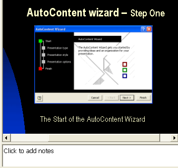

Free
powerpoint
Tutorials
|
Free
powerpoint
Tutorials
|
|
 home home |
Stay at Home and Learn | ||||
Add Notes to a PowerPoint Presentation |
|||||
|
Part 1, 2, 3, 4, 5, 6, 7, 8, 9, 10, 11
Another thing we can do is to add a note to our slide. This will be for our benefit. The audience won't see this note. In Outline View on the left, select slide 3 to highlight it. The slide with your image and text box should appear on the main stage. Below the main stage, you should see a white text area. It should say "Click to add notes":  When you click inside of the Notes text area, the default text will disappear. If you'd like a bigger screen to work with when you type your notes, click View from the PowerPoint menu bar. From the View menu, select Notes Page. You'll see the screen turn in to this: To get back, click View > Normal. But type the following text for the notes to this slide (without the quotation marks): "There's nothing to do on the first screen. But notice the green dot next to the word Start on the left hand side. The green dot tells you where you are in the Wizard." The notes for a presentation should be just that - a Note. This is not the place for your entire speech! The idea is that you add a note to remind you of what the slide is all about, and what points you should be covering. It's a bad presentation if you're reading everything from notes. You should be looking at your audience as much as possible, and only occasionally (if at all) glancing at the notes to make sure that you're on the right track, and that you've covered what you want to cover. But when you have typed your notes out, they should look like this:
You can print these notes out by clicking File > Print. On your Print dialogue box there will be a Print What dropdown list. Select Notes Pages from the list. Here's what it looks like for our printer: If you don't want to print the notes out, you can view them on just your screen, if you have a monitor in front of you during your presentation. To see them, press F5 to start your slide show. Move to slide three. Right-click anywhere on the screen, and you'll see a pop up menu: When you click Speaker Notes, you'll see the following dialogue box: The right click menu you just saw above has some useful option for your presentation, and we'll explore some of them later. But feel free to explore on your own!
In the final part of this first PowerPoint presentation, we have some exercises for you. They are all about completing your first presentation. |
||||